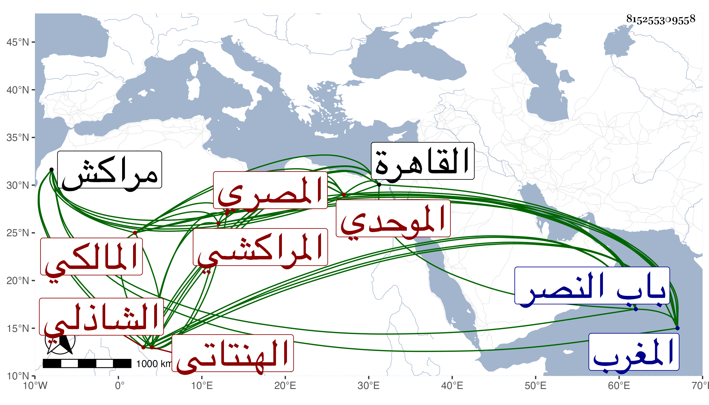

0902Sakhawi.DawLamic.ITO20230111-ara1.EIS1600.815255309558
Biography ID: 815255309558
901
محمد بن إبراهيم بن علي بن عثمان بن يوسف بن عبد الرزاق بن عبد الله أصيل الدين أبو الفتح بن البرهان أبي إسحاق الهنتاتي بفتح الهاء ثم نون ساكنة وفوقانيتين بينهما ألف نسبة لبلدة بمراكش المراكشي الموحدي نسبة إلى الموحدين القبيلة الشهيرة بالمغرب المصري المولد والدار المالكي الشاذلي ويعرف بابن الخضري بمعجمتين مضمومة ثم مفتوحة . ولد كما قال لي في ليلة الأربعاء سادس عشري المحرم سنة أربع وثمانين وسبعمائة وكتبه مرة بخطه سنة اثنتين وتسعين وقيل ثمان وثمانين أو أربع وتسعين بخط جامع ابن طولون . وقال المقريزي في عقوده بعد أن أسقط من نسبه عثمان إنه بظاهر القاهرة في يوم الأربعاء سابع عشري المحرم سنة ثمان وسبعين فالله أعلم ، ونشأ فحفظ القرآن وتلا به لعدة قراء على التقي الدجوي والغماري وتجويدا بل ولنافع وأبي عمر وعلى النور علي أخي بهرام وحفظ العمدة والإلمام لابن دقيق العيد والشاطبيتين والطوالع في أصول الدين وابن الجلاب والرسالة كلاهما في الفقه والحاجبية والملحة وغالب ألفية ابن ملك والتلخيص في المعاني والقصيدة الغافقية وغيرها ، وعرض على السراج البلقيني والتاج بهرام والغماري والبشكالسي في آخرين وتفقه بأبي حفص عمر التلمساني والشمس الساطي وأخذ العربية عن سعد الدين الخادم والغماري والمنطق عن عثمان الشغري ولازم العز بن جماعة في فنونه وخدمه سنين وانتفع به وسمع الحديث على الشهاب الجوهري والمطرز والغماري والشرف بن الكويك بل أخبر أنه سمع على ابن أبي المجد الفرسيسي والتقي الدجوي فالله أعلم ، وحدث وأفاد ودرس وأعاد وقال الشعر الحسن وطارح الأدباء ونادم الأعيان واشتهر بالمجون الزائد والتهتك وخلع العذار وخفة الروح وسرعة الإدراك مع التقدم في السن لكنه كان يحكي أنه استعمل البلادر ، كل ذلك مع الفضيلة التامة والمشاركة في النحو واللغة والفقه والطب والهيئة ، وقد ولي قديما تدريس الفقه بجامع الحاكم والقراسنقرية والحسنية والحديث فيما زعم بالفاضلية والإعادة بالكاملية والمنصورية والتصدير بجامع عمرو وغير ذلك وباشر الشهادة بالمفرد والخاص وغيرهما ، وحج بضع عشرة حجة أولها في سنة أربع عشرة وآخرها بعد الستين ، وكتب عنه ابن فهد في توجهه سنة خمسين ، وهو ممن قرض لابن ناهض نظم سيرة المؤيد ، وقد كتبت عنه قديما من نظمه ونثره وأسمعت ابني عليه ولم يكن بحجة ، وذكره المقريزي في عقوده وأنه لزم ابن جماعة فأخذ عنه عدة علوم ما بين منطق وجدل وغيرهما وشارك في الفقه وأصوله والطب والنحو ثم أقبل على طلب الدنيا ولو استمر على الاشتغال لجاد وساد لما عنده من الذكاء والفطنة وسرعة الحفظ وجودة التصور وهو مع ذلك يجيد نظم الشعر ويغوص على معانيه ولا يكاد يخفى عليه من دقائقه إلا اليسير ، صحبني قديما وتردد إلي مرارا وترافقنا في الحج سنة خمس وعشرين فما علمت إلا خيرا ، وفيه دعابة وعنده مجون وخفة روح تستحسن ولا تستهجن ثم روى عنه أن شيخه العز بن جماعة حكى له أنه كثيرا ما كان يحوك في صدره الوقوف على كلام ابن عربي من أصحابه والتابعين له ليعرف ما عندهم فيه قال : فرأيته ليلة في المنام فقال لي اقرأ كتبي على هذا وأشار لشخص فنظرت إليه وعرفته واستيقظت فمكثت مدة طويلة ثم سمعت بأن شخصا يسمى محمد بن عادل بن محمود التبريزي ويعرف بشيرين قد ورد ونزل مدرسة السلطان حسن وهو يدعي معرفة كتب ابن عربي ويحققها فمضيت إليه فلما وقع بصري عليه رأيته كأنه الشخص الذي أرانيه ابن عربي في منامي فتعجبت بحيث ظهرت إمارة التعجب علي وتأنيت في السير إليه قليلا فسألني عن السبب فأخبرته فأخبرني أنه أيضا رأى ابن عربي في النوم وأنه أمره بالمسير لمصر لإقراء شخص وأشار إليه وهو أشبه الناس بك قال : وحينئذ قرأت عليه فلما انتهت القراءة وعلمت ما هم عليه تجهز وقال : قد حصل ما جئنا بسببه ولم يقم وأن والده أبا إسحق إبراهيم قال له : سمعت من لفظ البرهان الجعبري بميعاده في زاويته خارج باب النصر يقول : كان الجمال بن هشام معتقدا يعني فيه ممن يواظب ميعاده فلامه أبو حيان على ذلك فقال له : امش معي واسمع كلامه ففعل فوقع منه في بعض كلامه لحن فأنكره أبو حيان بقلبه فقام الجعبري قائما وهو ينشد :
| سر الخليقة كائن في المعدن | بحقائق الأرواح لا بالألسن |
| والجوهر الشفاف خير يقيننا | إذ كانت الأصداف ما لم يجبن |
| ماذا يفيد أخا لسان معرب | إن يلق خالقه بقلب ألكن |
| فإذا ظهرت برسم ما أخفيته | فقل الصواب ولو تكن بالأرمن |
انتهى والله أعلم بصحتهما . مات في أوائل رجب سنة اثنتين وسبعين وقد جاز التسعين على أحد الأقوال عفا الله عنه ومما كتبته عنه قوله :
| إن غاب أوزار كان القلب في تعب | لا خير في عشقه إن جاء أو سارا |
| قال العواذل قد أتعبت من شغف | على الحبيب فقد حملت أوزارا |
